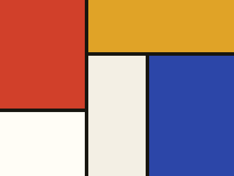
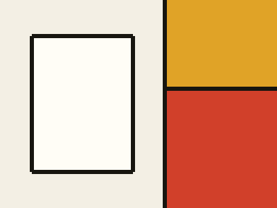
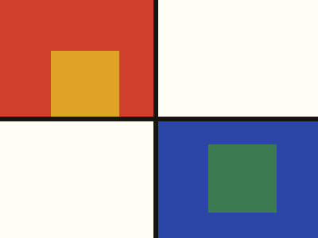

I tuoi mondi
Ogni mondo è un volume a sé: personaggi, luoghi, sessioni, storie e pagine di riferimento raccolti sotto un'unica copertina.

Volume ILe Cronache di Boscochiaro
La Marchesa ha rialzato le mura di Muschioverde e le Dinastie dell'Aquila contano i loro ultimi voli. Otto sessioni di gioco, tre archi narrativi.

Volume IIVagabondi di Frontiera
Un manipolo di esploratori senza fazione attraversa i confini contesi fra il Ducato e l'Alleanza del Bosco.

Volume IIIIl Ducato Sotterraneo
Cronaca parallela ambientata sotto Roccianera, giocata in campagna separata con lo stesso regolamento di casa.
Ultimi movimenti
Sara ha pubblicato la sessione 08 · L'inverno dei corvi in Le Cronache di Boscochiaro.
Marco ha aggiornato il personaggio Barone Talpa.
Nuovo luogo in Vagabondi di Frontiera: Il Guado Spezzato.
Giulia ha creato la storia Il patto del Guado.